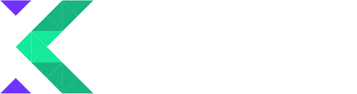
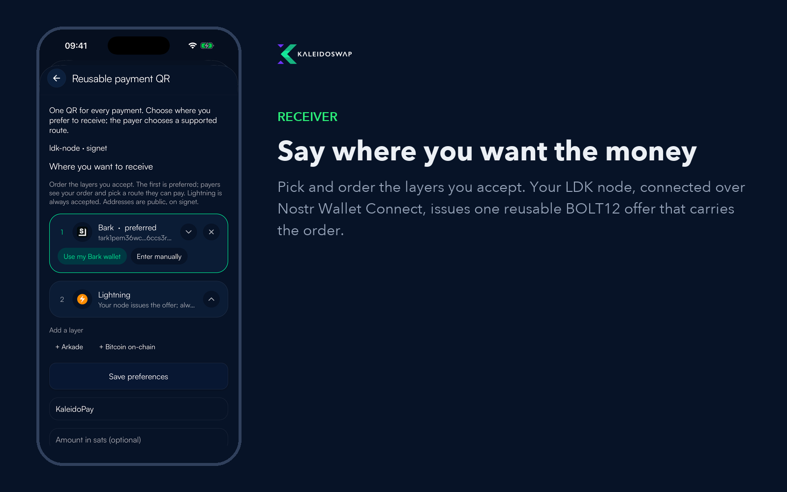
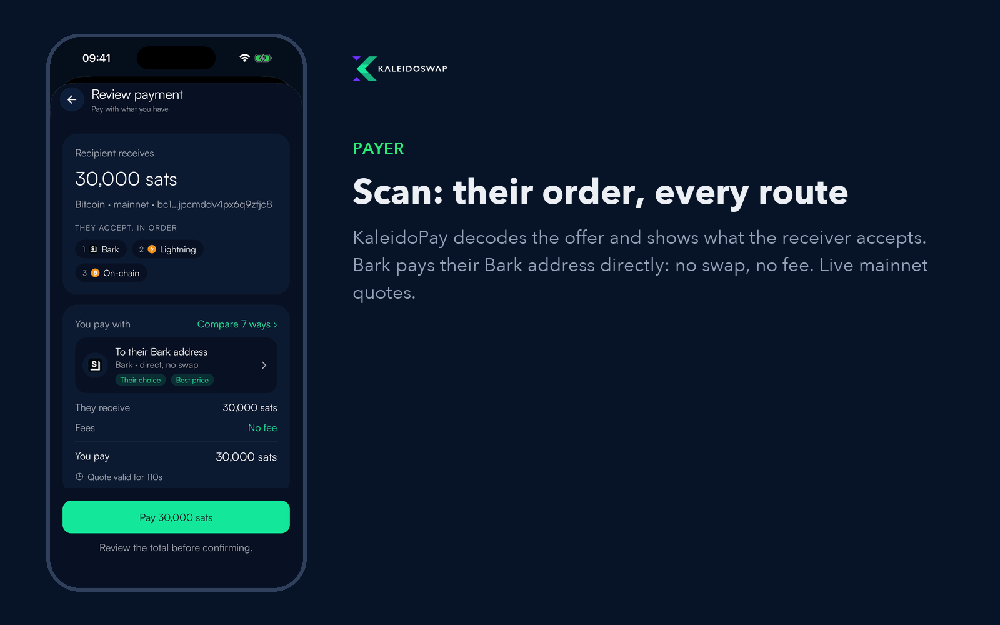
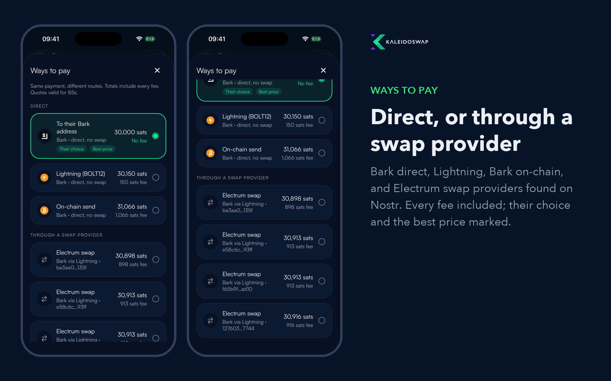
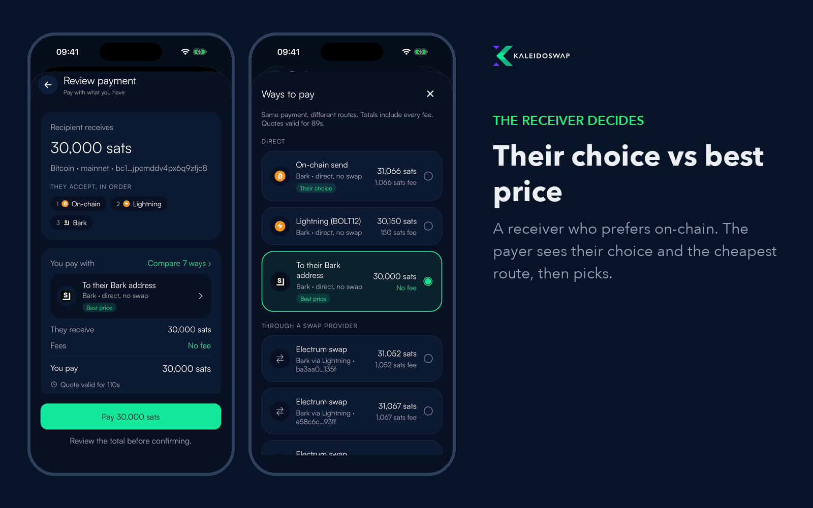
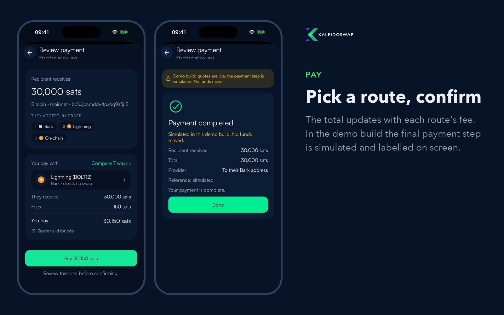

One reusable BOLT12 QR says which layers the receiver accepts, in order: Bark, Arkade, Lightning, on-chain. The payer's wallet reads it and quotes every route it can pay, directly or through a swap provider found on Nostr. Any other BOLT12 wallet still sees a normal offer.
Recorded from Rate, KaleidoSwap's mobile wallet, on the iOS simulator with live mainnet quotes. Nothing was paid in these recordings.
Pay with what you have (40 s). Scan, see the receiver's order, compare Bark direct, Lightning, on-chain and four Electrum swap providers.
The receiver decides (35 s). A receiver who prefers on-chain: their choice and the best price are marked separately.





ssps_rails insidessps_rails is an experimental offer field (type 1000000385) from the open SSPS spec §5.3: the receiver's rails, most preferred first. Bark and Arkade entries carry the receiver's address and the server's key. Lightning is always accepted.
LDK recognises its own offers with an HMAC over every record, so rails can't be added afterwards. We patched rust-lightning, ldk-node and ldk-server to issue offers with the record, including amountless reusable ones.
Electrum's swap providers advertise on Nostr. KaleidoPay talks to them with Electrum's own protocol: the wallet pays a hold invoice and a prepayment, the provider locks on-chain, the wallet claims to the receiver's address and checks every script itself.
ssps_lock) instead of a static address.The end-to-end demo video uses a real signet receiver node and live quotes; its final payment step is simulated and labelled as such on screen.
Bark, Arkade, Lightning, on-chain today; Liquid and RGB Lightning assets next. The receiver states a preference, the payer's wallet finds a route.
An open market on Nostr: Electrum's providers today, SSPS makers next, each payment quoted by whoever can route it.
ssps_lock in the invoice, so a payer can pay on-chain or on Ark without Lightning in between.
A bLIP for the offer record, the LDK changes, and Bark BOLT12 support in wallet-engine.
A mainnet receiver node behind NWC, then real payments end to end.
hack/universal-bolt12: the app